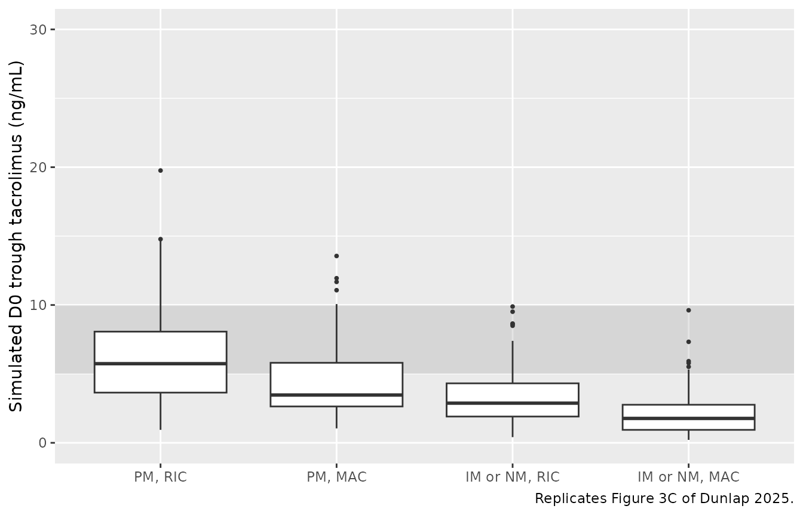
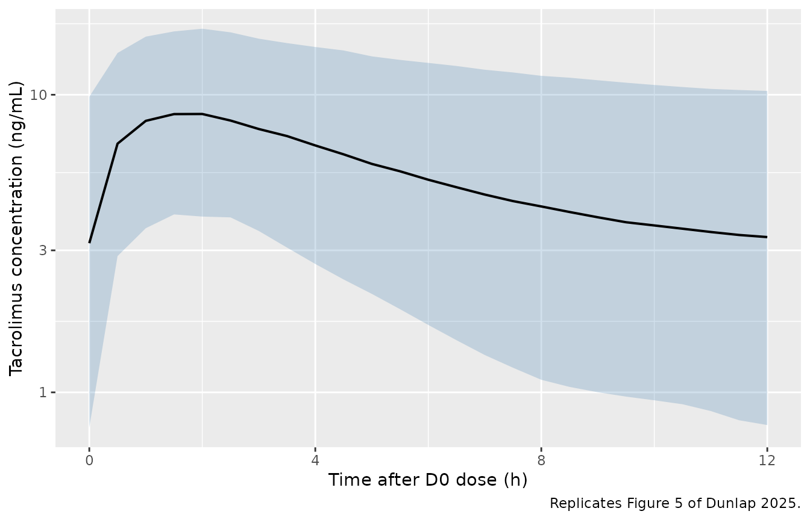
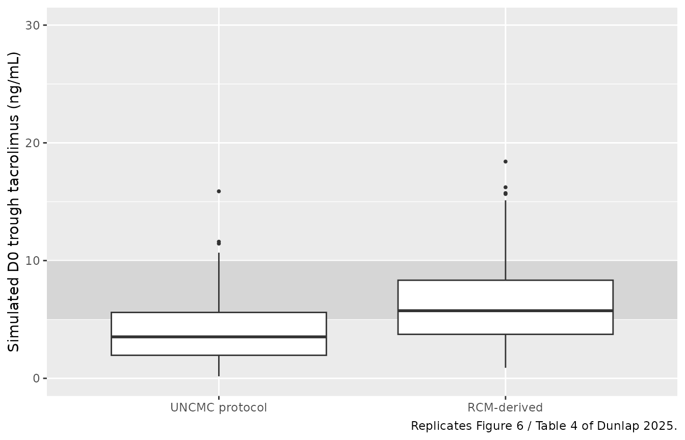

Tacrolimus (Dunlap 2025)
Source:vignettes/articles/Dunlap_2025_tacrolimus.Rmd
Dunlap_2025_tacrolimus.RmdModel and source
- Citation: Dunlap TC, Zhu J, Weiner DL, Kemper RM, DeVane SC, Ma F, et al. A Tacrolimus Population Pharmacokinetic Model for Adult Allogeneic Hematopoietic Cell Transplant Recipients Provides Clinical Opportunities for Precision Dosing. Clin Pharmacokinet. 2025;64(11):1621-1637. doi:10.1007/s40262-025-01529-w.
- Description: Two-compartment population pharmacokinetic model for oral immediate-release tacrolimus in adult allogeneic hematopoietic cell transplant (allo-HCT) recipients (Dunlap 2025): first-order absorption with bioavailability fixed at 1; allometric (TBW/70 kg) scaling fixed at 0.75 on CL/F and Q/F and at 1 on V1/F and V2/F; exponential CYP3A5 intermediate / normal metabolizer phenotype effect on CL/F (CYP3A5 IM or NM have ~2.14-fold higher CL/F than CYP3A5 PM); exponential reduced-intensity-conditioning effect on CL/F (RIC recipients have ~37% lower CL/F than myeloablative-conditioning recipients); inter-individual variability on V1/F, CL/F, and V2/F; and an additive residual error of 2.51 ng/mL on the linear concentration scale.
- Article: https://doi.org/10.1007/s40262-025-01529-w
Population
The model was developed from 906 oral tacrolimus whole-blood concentrations collected from 290 adult allogeneic hematopoietic cell transplant (allo-HCT) recipients enrolled in two clinical pharmacology studies at the University of North Carolina Medical Center (UNCMC): the retrospective UNC16-1480 cohort (n = 252, single therapeutic-drug-monitoring trough on D-1) and the prospective UNC19-3328 cohort (n = 38, mean 17.2 samples per subject across D-2, D-1, and D0; clinicaltrials.gov NCT04645667). Median (IQR) age was 54 (44, 63) years, total body weight 84 (71, 97) kg, and 43% of subjects were female. Self- reported race was 84% White, 11% Black, and 5% Other. The cohort was predominantly diagnosed with acute leukemia (55%) or MDS (17%); 49% received myeloablative conditioning (MAC) chemotherapy and 51% received reduced- intensity conditioning (RIC). The CYP3A5 metabolizer phenotype distribution was 70% poor metabolizer (PM), 25% intermediate metabolizer (IM), and 5% normal metabolizer (NM), determined by TaqMan diplotype calls of CYP3A51, 3, 6, and 7 alleles (Dunlap 2025 Methods 2.2 and Table 1). All subjects received oral immediate-release tacrolimus at the UNCMC institutional starting dose (0.045 mg/kg twice daily for two days from D-3, then 0.03 mg/kg twice daily) with TDM-driven adjustments retained in the analysis dataset.
The same information is available programmatically via
readModelDb("Dunlap_2025_tacrolimus")$population.
Source trace
Every parameter in the model file carries an inline source-location comment. The table below collects the entries in one place.
| Equation / parameter | Value | Source location |
|---|---|---|
lka (Ka) |
0.50 1/h | Table 2, RCM column, TVKA row (Eq. 4) |
lvc (V1/F at TBW=70 kg) |
150 L | Table 2, RCM column, TVV1/F row (Eq. 5) |
lcl (CL/F at TBW=70 kg, PM, MAC) |
23 L/h | Table 2, RCM column, TVCL/F row (Eq. 6) |
lvp (V2/F at TBW=70 kg) |
1153 L | Table 2, RCM column, TVV2/F row (Eq. 7) |
lq (Q/F at TBW=70 kg) |
43 L/h | Table 2, RCM column, TVQ/F row (Eq. 8) |
e_wt_cl_q (allometric exponent on CL/F and Q/F) |
0.75 (FIX) | Table 2, RCM column, TVCL/F~TBW and TVQ/F~TBW rows |
e_wt_vc_vp (allometric exponent on V1/F and V2/F) |
1 (FIX) | Table 2, RCM column, TVV1/F~TBW and TVV2/F~TBW rows |
e_cyp3a5_expr_cl (CYP3A5 IM or NM factor on CL/F) |
2.14 [1.67, 2.74] | Table 2, RCM column, TVCL/F~CYP3A5 IM or NM row |
e_hct_cond_ric_cl (RIC factor on CL/F) |
0.63 [0.51, 0.77] | Table 2, RCM column, TVCL/F~RIC row |
| IIV V1/F (omega^2 = log(0.95^2 + 1) = 0.65823) | 95% CV | Table 2, RCM column, IIV V1/F row |
| IIV CL/F (omega^2 = log(0.55^2 + 1) = 0.26282) | 55% CV | Table 2, RCM column, IIV CL/F row |
| IIV V2/F (omega^2 = log(0.66^2 + 1) = 0.36185) | 66% CV | Table 2, RCM column, IIV V2/F row |
| Additive residual error | 2.51 ng/mL | Table 2, RCM column, Additive RUV row (Eq. 9; Methods 2.3) |
| Bioavailability F | 1 (fixed) | Methods 2.3 (allometry fixed-to-theory paragraph) |
| Reference subject | 70 kg, CYP3A5 PM, MAC | Section 3.2 (“a 70 kg CYP3A5 PM subject receiving MAC”) |
| Two-cmt, first-order oral absorption | – | Section 3.2 first paragraph; Eqs. 4-9 |
Virtual cohort
The published dataset is not openly available, so the virtual cohort below mirrors the demographics in Dunlap 2025 Table 1 and the four clinically distinct (CYP3A5 phenotype) x (conditioning intensity) sub-groups used in the paper’s Figures 3 and 6.
set.seed(20250812)
n_per_subgroup <- 100L
make_cohort <- function(n, cyp3a5_expr, hct_cond_ric, label, id_offset = 0L) {
tibble(
id = id_offset + seq_len(n),
WT = exp(rnorm(n, mean = log(84), sd = 0.20)), # TBW median 84 kg, IQR 71-97
CYP3A5_EXPR = cyp3a5_expr,
HCT_COND_RIC = hct_cond_ric,
subgroup = label
)
}
# Four sub-groups -- IDs are disjoint across panels (Dunlap 2025 Figure 3C
# layout: PM/RIC, PM/MAC, IM_or_NM/RIC, IM_or_NM/MAC).
demo <- bind_rows(
make_cohort(n_per_subgroup, cyp3a5_expr = 0L, hct_cond_ric = 1L,
label = "PM, RIC", id_offset = 0L * n_per_subgroup),
make_cohort(n_per_subgroup, cyp3a5_expr = 0L, hct_cond_ric = 0L,
label = "PM, MAC", id_offset = 1L * n_per_subgroup),
make_cohort(n_per_subgroup, cyp3a5_expr = 1L, hct_cond_ric = 1L,
label = "IM or NM, RIC", id_offset = 2L * n_per_subgroup),
make_cohort(n_per_subgroup, cyp3a5_expr = 1L, hct_cond_ric = 0L,
label = "IM or NM, MAC", id_offset = 3L * n_per_subgroup)
)
stopifnot(!anyDuplicated(demo$id))Simulation
Two regimens are simulated. The first follows the UNCMC institutional dosing protocol used in the paper (0.045 mg/kg BID from D-3 for the first four doses, 0.03 mg/kg BID thereafter; Dunlap 2025 Methods 2.2). The second is the RCM-derived recommendation that was identified as the minimum acceptable increase relative to the institutional protocol for each sub-group (Dunlap 2025 Table 3): no change for PM/RIC, +50% for PM/MAC, +100% for IM-or-NM/RIC, and 0.06 mg/kg three times daily for IM-or-NM/MAC.
build_events <- function(demo, regimen = c("UNCMC", "RCM"), sim_hours = 96) {
regimen <- match.arg(regimen)
# Doses are administered on a 12-hour cycle (or 8-hour cycle for the TID
# IM-or-NM/MAC arm of the RCM strategy). Time origin t=0 is the first
# dose at D-3, so D0 trough corresponds to t=72 h.
#
# In the UNCMC protocol the first 4 doses (covering D-3 and D-2) are
# 0.045 mg/kg BID and the remaining doses (D-1 and D0) are 0.03 mg/kg BID.
# In the RCM-derived strategy doses are scaled by sub-group; the IM-or-NM/MAC
# sub-group switches to 0.06 mg/kg TID.
per_subject_doses <- function(row) {
if (regimen == "UNCMC") {
times <- seq(0, sim_hours - 1, by = 12)
doses <- ifelse(times < 48,
0.045 * row$WT,
0.030 * row$WT)
} else {
# RCM-derived strategy
mult <- switch(row$subgroup,
"PM, RIC" = 1.00,
"PM, MAC" = 1.50,
"IM or NM, RIC" = 2.00,
"IM or NM, MAC" = 1.00) # MAC IM/NM uses TID schedule, see below
if (row$subgroup == "IM or NM, MAC") {
times <- seq(0, sim_hours - 1, by = 8)
doses <- rep(0.06 * row$WT, length(times))
} else {
times <- seq(0, sim_hours - 1, by = 12)
doses <- ifelse(times < 48,
0.045 * mult * row$WT,
0.030 * mult * row$WT)
}
}
tibble(id = row$id, time = times, amt = doses,
evid = 1L, cmt = "depot",
WT = row$WT, CYP3A5_EXPR = row$CYP3A5_EXPR,
HCT_COND_RIC = row$HCT_COND_RIC, subgroup = row$subgroup)
}
doses_df <- do.call(rbind, lapply(seq_len(nrow(demo)),
function(i) per_subject_doses(demo[i, ])))
# Observation grid: every 30 min for D0 (t=72 to t=84) to characterise the
# post-dose profile, plus pre-dose troughs at t=24 (D-2), t=48 (D-1),
# and t=72 (D0).
obs_times <- sort(unique(c(24, 48, seq(72, 84, by = 0.5))))
obs <- demo |>
select(id, WT, CYP3A5_EXPR, HCT_COND_RIC, subgroup) |>
tidyr::crossing(time = obs_times) |>
mutate(amt = NA_real_, evid = 0L, cmt = NA_character_)
bind_rows(doses_df, obs) |>
arrange(id, time, desc(evid))
}
events_uncmc <- build_events(demo, regimen = "UNCMC")
events_rcm <- build_events(demo, regimen = "RCM")
mod <- rxode2::rxode2(readModelDb("Dunlap_2025_tacrolimus"))
#> ℹ parameter labels from comments will be replaced by 'label()'
sim_uncmc <- rxode2::rxSolve(
mod, events = events_uncmc,
keep = c("subgroup")
) |> as.data.frame()
sim_rcm <- rxode2::rxSolve(
mod, events = events_rcm,
keep = c("subgroup")
) |> as.data.frame()
# Deterministic typical-value run for the no-IIV comparisons.
mod_typical <- mod |> rxode2::zeroRe()
sim_uncmc_typ <- rxode2::rxSolve(mod_typical, events = events_uncmc,
keep = c("subgroup")) |> as.data.frame()
#> ℹ omega/sigma items treated as zero: 'etalvc', 'etalcl', 'etalvp'
#> Warning: multi-subject simulation without without 'omega'Replicate published figures
Figure 3 – D0 trough distribution by sub-group under the UNCMC protocol
Dunlap 2025 Figure 3C shows the observed steady-state D0 trough concentration distribution across the four (CYP3A5 phenotype) x (conditioning intensity) sub-groups under the current UNCMC dosing protocol. The simulated trough at t = 72 h (D0 morning, immediately before the next dose) reproduces the qualitative gradient: PM/RIC sits highest (often above the 5-10 ng/mL ITR), PM/MAC sits at the lower end of the ITR, and IM-or-NM sub-groups sit predominantly below the ITR.
fig3_data <- sim_uncmc |>
filter(time == 72) |>
mutate(subgroup = factor(subgroup,
levels = c("PM, RIC", "PM, MAC",
"IM or NM, RIC", "IM or NM, MAC")))
ggplot(fig3_data, aes(subgroup, Cc)) +
annotate("rect", xmin = -Inf, xmax = Inf, ymin = 5, ymax = 10,
alpha = 0.25, fill = "grey60") +
geom_boxplot(outlier.size = 0.7) +
scale_y_continuous(limits = c(0, 30)) +
labs(x = NULL,
y = "Simulated D0 trough tacrolimus (ng/mL)",
caption = "Replicates Figure 3C of Dunlap 2025.")
Replicates Figure 3C of Dunlap 2025: simulated D0 trough tacrolimus concentration distribution by (CYP3A5 metabolizer phenotype) x (conditioning regimen intensity) under the UNCMC institutional dosing protocol. Shaded band is the 5-10 ng/mL UNCMC institutional target range.
Figure 5 – D0 dosing-interval pcVPC for the overall cohort
Dunlap 2025 Figure 5 shows a prediction-corrected VPC of the D0 dosing interval (~12 h post the morning D0 dose) overlaid on observed concentrations. The simulated VPC below shows the dose-normalised D0 dosing-interval profile (percentiles 5/50/95) for the full virtual cohort under the UNCMC protocol.
fig5_data <- sim_uncmc |>
filter(time >= 72, time <= 84) |>
mutate(time_after_dose = time - 72)
fig5_summary <- fig5_data |>
group_by(time_after_dose) |>
summarise(Q05 = quantile(Cc, 0.05, na.rm = TRUE),
Q50 = quantile(Cc, 0.50, na.rm = TRUE),
Q95 = quantile(Cc, 0.95, na.rm = TRUE),
.groups = "drop")
ggplot(fig5_summary, aes(time_after_dose, Q50)) +
geom_ribbon(aes(ymin = Q05, ymax = Q95), alpha = 0.25, fill = "steelblue") +
geom_line(linewidth = 0.7) +
scale_y_log10() +
scale_x_continuous(breaks = seq(0, 12, by = 4)) +
labs(x = "Time after D0 dose (h)",
y = "Tacrolimus concentration (ng/mL)",
caption = "Replicates Figure 5 of Dunlap 2025.")
Replicates Figure 5 of Dunlap 2025: simulated tacrolimus concentration vs. time after the D0 dose, percentiles 5/50/95 across all sub-groups, under the UNCMC institutional dosing protocol.
Figure 6 / Table 4 – D0 trough under UNCMC vs. RCM-derived dosing
Dunlap 2025 Figure 6 (and Table 4) compares the population-level D0 trough distribution under the current UNCMC dosing strategy and under the RCM model- derived dosing strategy. The model-derived strategy is expected to shift the overall distribution upward into the 5-10 ng/mL ITR.
fig6_data <- bind_rows(
sim_uncmc |> filter(time == 72) |> mutate(strategy = "UNCMC protocol"),
sim_rcm |> filter(time == 72) |> mutate(strategy = "RCM-derived")
) |>
mutate(strategy = factor(strategy,
levels = c("UNCMC protocol", "RCM-derived")))
ggplot(fig6_data, aes(strategy, Cc)) +
annotate("rect", xmin = -Inf, xmax = Inf, ymin = 5, ymax = 10,
alpha = 0.25, fill = "grey60") +
geom_boxplot(outlier.size = 0.7) +
scale_y_continuous(limits = c(0, 30)) +
labs(x = NULL,
y = "Simulated D0 trough tacrolimus (ng/mL)",
caption = "Replicates Figure 6 / Table 4 of Dunlap 2025.")
Replicates Figure 6 / Table 4 of Dunlap 2025: simulated D0 trough tacrolimus concentration distribution under the current UNCMC institutional protocol vs. the RCM-derived dosing strategy. Shaded band is the 5-10 ng/mL ITR. Simulated medians fall within the ITR for the model-derived strategy.
PKNCA validation
A standard NCA over the D0 dosing interval (12 h after the D0 morning dose under the UNCMC protocol) gives Cmax, Tmax, and AUC0-12 by sub-group. The PKNCA formula carries the (CYP3A5 phenotype) x (conditioning intensity) grouping so the per-sub-group Cmax can be compared against the paper’s overall safety constraint Cmax limit (24.2 ng/mL, Methods 2.6).
nca_window <- sim_uncmc |>
filter(time >= 72, time <= 84) |>
mutate(time_after_dose = time - 72) |>
select(id, time = time_after_dose, Cc, subgroup)
dose_df <- demo |>
mutate(time = 0, amt = 0.030 * WT) |>
select(id, time, amt, subgroup)
conc_obj <- PKNCA::PKNCAconc(nca_window, Cc ~ time | subgroup + id)
dose_obj <- PKNCA::PKNCAdose(dose_df, amt ~ time | subgroup + id)
intervals <- data.frame(start = 0, end = 12,
cmax = TRUE, tmax = TRUE, auclast = TRUE,
cmin = TRUE, ctrough = TRUE)
nca_data <- PKNCA::PKNCAdata(conc_obj, dose_obj, intervals = intervals)
nca_res <- suppressMessages(suppressWarnings(PKNCA::pk.nca(nca_data)))
nca_summary <- summary(nca_res)
knitr::kable(nca_summary,
caption = "D0 dosing-interval NCA on the simulated cohort under the UNCMC institutional protocol (12 h interval).")| start | end | subgroup | N | auclast | cmax | cmin | tmax | ctrough |
|---|---|---|---|---|---|---|---|---|
| 0 | 12 | IM or NM, MAC | 100 | 42.2 [55.3] | 6.31 [45.1] | 1.64 [94.6] | 2.00 [0.500, 3.50] | 1.67 [94.8] |
| 0 | 12 | IM or NM, RIC | 100 | 62.7 [43.9] | 8.52 [39.2] | 2.92 [66.7] | 2.00 [0.500, 3.50] | 3.02 [67.4] |
| 0 | 12 | PM, MAC | 100 | 74.4 [41.1] | 9.57 [37.2] | 3.70 [64.3] | 2.00 [0.500, 3.50] | 3.86 [64.1] |
| 0 | 12 | PM, RIC | 100 | 99.1 [33.6] | 11.6 [32.2] | 5.49 [48.8] | 2.00 [1.00, 3.50] | 5.80 [48.4] |
Comparison against published NCA
Dunlap 2025 does not report a Cmax / AUC NCA table for the analysis cohort (the paper’s primary endpoint is the D0 trough concentration). Instead, Methods 2.6 cites a safety constraint that the predicted Cmax should not exceed 24.2 ng/mL (the average Cmax observed at the FDA-label oral tacrolimus 0.3 mg/kg/day dose in adult renal-transplant recipients). The simulated D0 Cmax across the four sub-groups under the UNCMC protocol is well below that threshold, consistent with the paper’s safety-constraint analysis.
cmax_summary <- sim_uncmc |>
filter(time >= 72, time <= 84) |>
group_by(subgroup, id) |>
summarise(cmax_subj = max(Cc), .groups = "drop") |>
group_by(subgroup) |>
summarise(cmax_median = median(cmax_subj),
cmax_p95 = quantile(cmax_subj, 0.95),
.groups = "drop")
knitr::kable(cmax_summary,
digits = 2,
col.names = c("Sub-group", "Simulated D0 Cmax median (ng/mL)",
"Simulated D0 Cmax 95th percentile (ng/mL)"),
caption = "Per-sub-group D0 Cmax distribution under the UNCMC protocol; compare against the Dunlap 2025 Methods 2.6 safety constraint of 24.2 ng/mL.")| Sub-group | Simulated D0 Cmax median (ng/mL) | Simulated D0 Cmax 95th percentile (ng/mL) |
|---|---|---|
| IM or NM, MAC | 6.69 | 13.73 |
| IM or NM, RIC | 8.62 | 14.35 |
| PM, MAC | 9.54 | 16.82 |
| PM, RIC | 11.90 | 18.49 |
Assumptions and deviations
- Inter-occasion variability is not modelled. Dunlap 2025 Methods 2.3 describes IIV on PK parameters with a normal distribution of mean zero and variance omega^2; the paper does not report an IOV component in the RCM. The model file therefore implements only IIV on V1/F, CL/F, and V2/F.
- Off-diagonal IIV correlations are set to zero. Dunlap 2025 Table 2 reports IIV %CV for each PK parameter but does not publish the variance-covariance matrix’s off-diagonal elements. The model uses a diagonal IIV block.
- Race / ethnicity is not a model covariate. Dunlap 2025 Table 1 reports race for descriptive purposes (84% White, 11% Black, 5% Other) but the RCM does not include a race covariate. The validation cohort therefore does not stratify by race.
- POR genotype effect is not retained. The full covariate model evaluated POR 1/28 and POR 28/28 effects on CL/F, but neither met the ROPE-based clinical-significance criterion (Dunlap 2025 Section 3.2 / Figure 2A) and they were dropped from the RCM. The packaged model therefore omits POR.
- CYP3A5 IM and NM are pooled as a single binary indicator. Dunlap 2025 Section 3.2 explains that estimating separate TVCL/F~IM and TVCL/F~NM effects in the FCM produced overlapping confidence intervals and that the RCM was simplified to a single TVCL/F~(IM or NM) effect for parsimony and to align with the CPIC dosing recommendations that do not differentiate IM from NM. The model file follows this final RCM choice.
- TBW is used directly without categorisation. The paper reports a Monte Carlo sensitivity analysis of the dosing recommendations at TBW values of 50, 75, 100, and 125 kg (Methods 2.6); the packaged model uses the continuous TBW input and reproduces sub-group differences via the (TBW/70)^0.75 allometric form on CL/F (and Q/F) and (TBW/70)^1 on V1/F (and V2/F).
-
Reference covariate values preserved literally.
Dunlap 2025 reports typical PK parameter values for a 70 kg CYP3A5 PM
subject receiving MAC (Section 3.2). The model file uses these values
verbatim and applies the RCM covariate factors
(
exp(theta)^indicator) on top, reproducing Equations 4-9 directly. -
Bioavailability fixed at 1. Per Dunlap 2025 Methods
2.3, F was not estimated; CL/F, V1/F, V2/F, and Q/F are apparent values
inseparable from F. The model file does not parameterise
lfdepot. - Simulated cohort size. The vignette uses 100 subjects per (CYP3A5 phenotype) x (conditioning intensity) sub-group (400 total), small enough to render the vignette in well under 5 minutes (the pkgdown gate) but large enough to give stable percentiles for the per-sub-group trough distributions in Figures 3, 5, and 6.